Tutorial on the use of google docs and google drive for sharing, viewing, and editing shared documents for board of management business.
Open a web browser (Internet Explorer, Firefox, Chrome, Safari). In the address bar enter gmail.com If you already have a gmail account it may automatically login to your existing account.
In order to login to your new Newtown account you can click on the far right icon as seen below. When you click it will show the account you are currently logged in as. It will also have at the a button called Add Account. Click this button and follow the steps below.
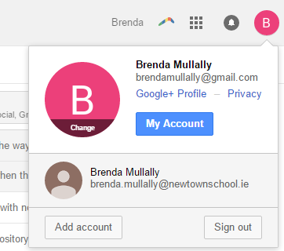
If your browser does not login you in automatically you may see the following:
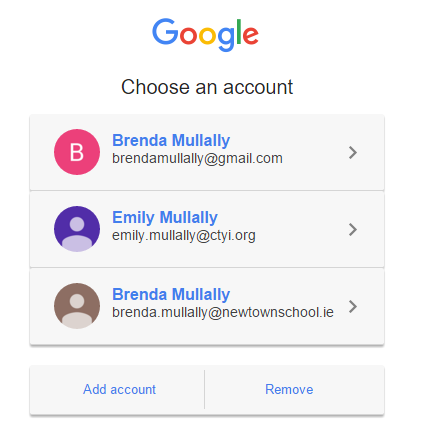
in this case you click the Add Account button and follow the steps below.
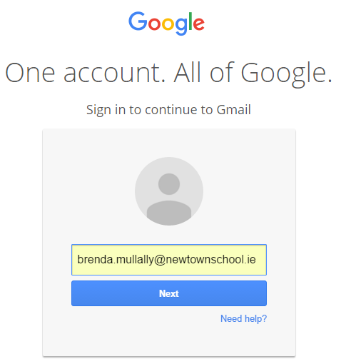
Type in your email address in the format provided to you.
Then type in the password you were provided and click sign in.
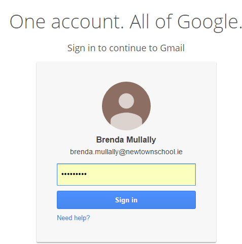
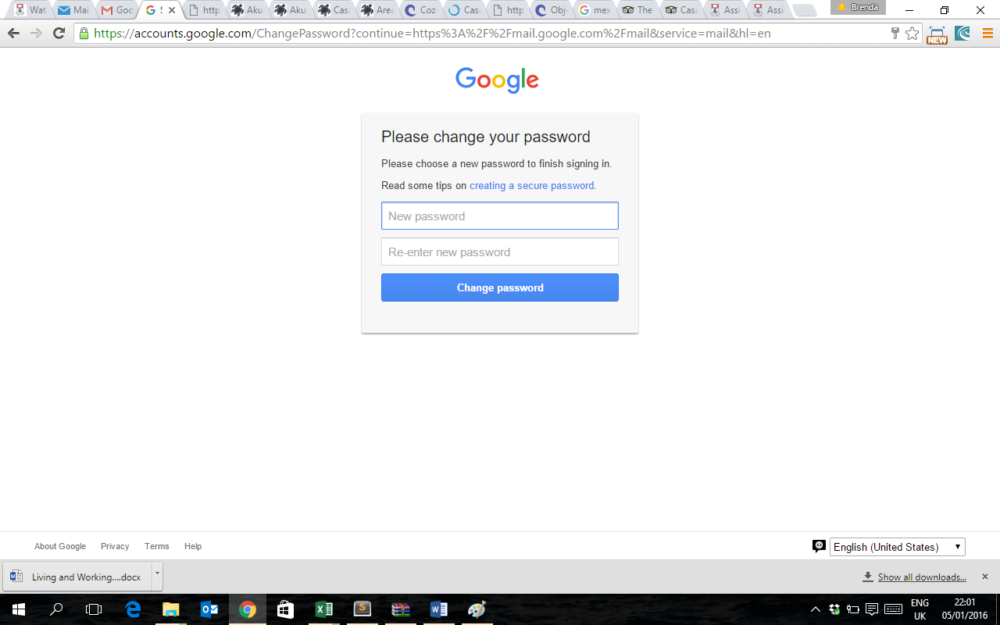
For example: "We can't go on together with suspicious minds" creates the password Wcg0twsm using the first letter of each word and the first word as a capital letter and substituting the o for "on" as a zero. Then you just have to sing the tune in your head as you type the first letter or number of each word in the lyrics.
Of course you can enter any password you like, but it is important to choose one that does not have a real word in it or a year or date at the end!
Now you should be logged in and your can see the following:
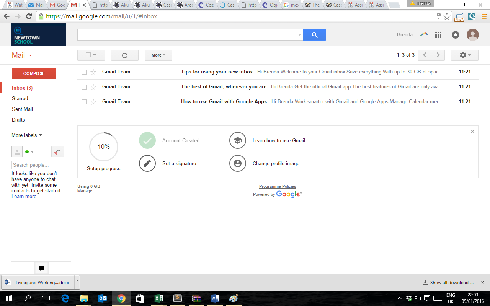
The next step in the tutorial will show you the use of google drive and google docs.
Click on the apps icon shown highlighted in red in the image below:
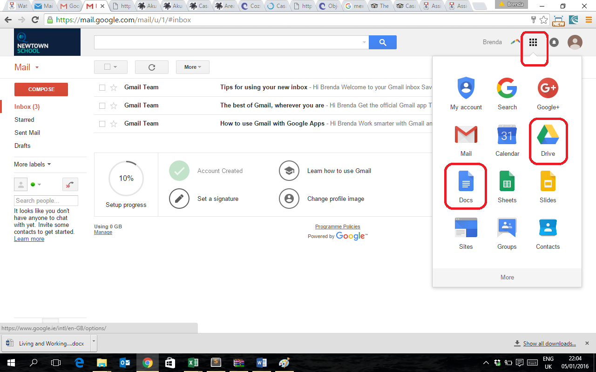
The apps available through Google are shown. I have highlighted both Drive and Docs. If you click on Drive you will be brought to the following page:
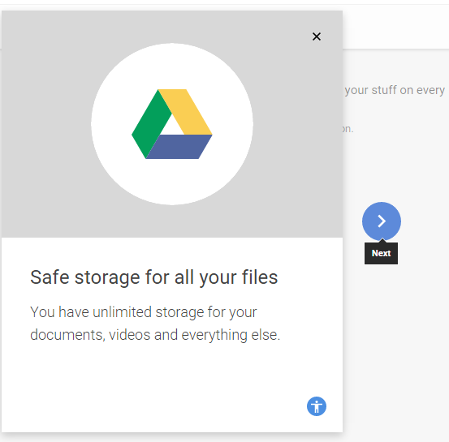
It shows you several slides of why you would use Google Drive, click the blue arrow to scroll through them and on the last one click Take me to Drive.
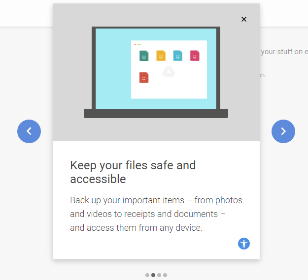 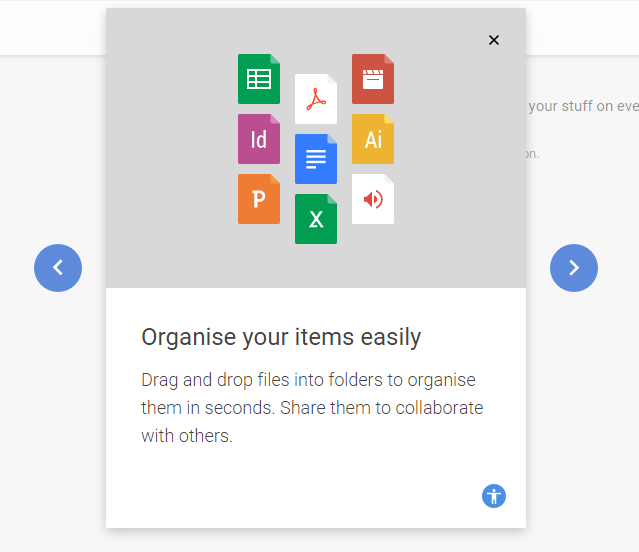 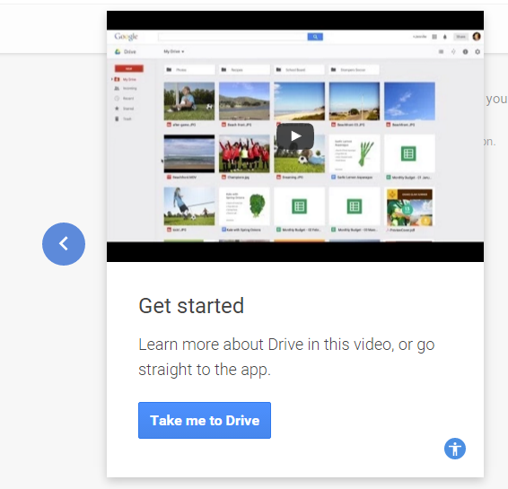
Your drive will look something like this if you have not used it before.
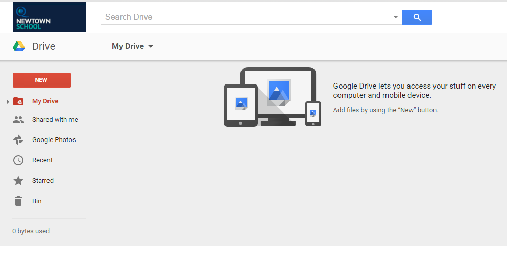
On the left you can see a large red New button, below it is My drive with an arrow beside to the left, this means you are looking at the contents of your drive. Other options are Shared with Me and Google Photos, if you click on either of these a red arrow will appear beside the chosen option so you know your location within google drive.
Here you can upload a single file or folder, or create a new folder. For the purposes of the board of management the files will be uploaded or created by the secreatary to the board (Principal) in most cases. However if you wish to upload or create a new google docs file it is very easy to follow the steps.
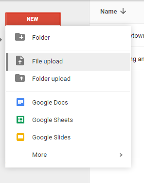
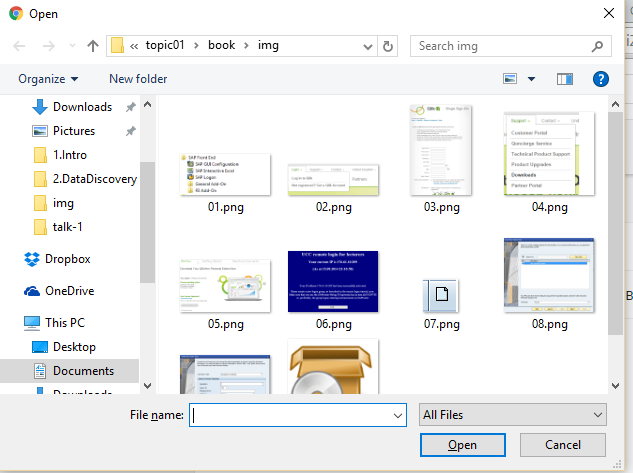
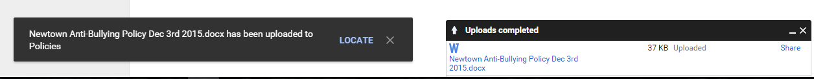
You will see the file you uploaded in the main window, similar to below. It shows the name of the document and owner when it was last modified and the file size. Below is the list view, you can change to grid view by clicking on the highlighted grid view icon.
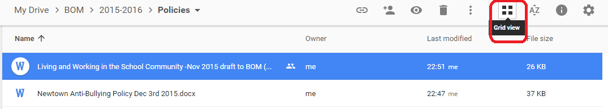
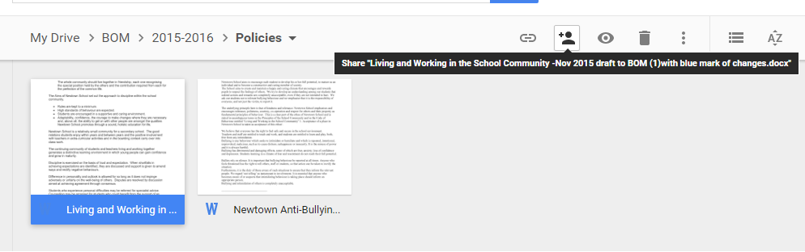
Then switch back by clicking on List view.
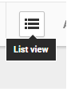
To open an uploaded file you can right click on the document in the list, you can choose the first option preview the document, if you do this you can only view the document. If you want to edit the document then choose Open With > Google Docs.
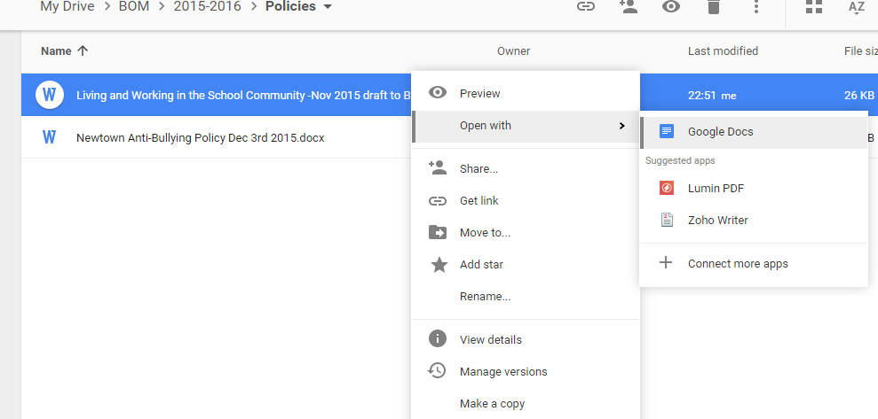
It will then open in a new tab as below:
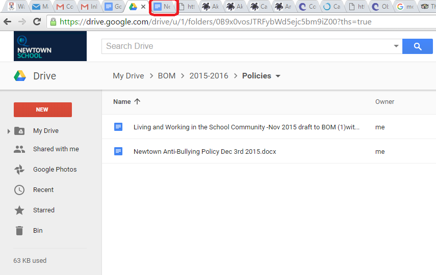
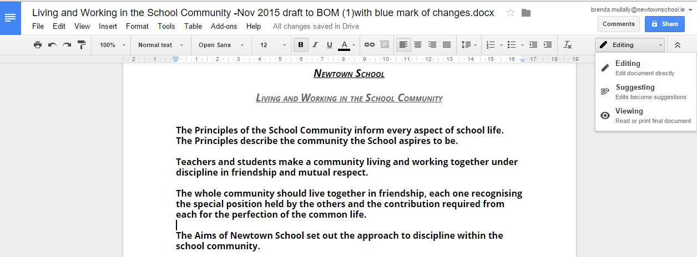
Once it opens in this mode you can edit the document. When it is a document that multiple people share you should choose the option to edit using the suggesting mode (see in image above), this means your edits are suggestions that the owner of the document can accept or reject. It will track and show each person's suggestions.
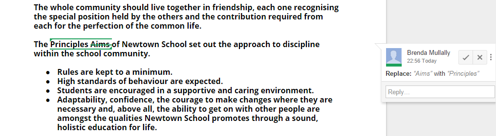
If you want to share an uploaded document you click on the share icon.
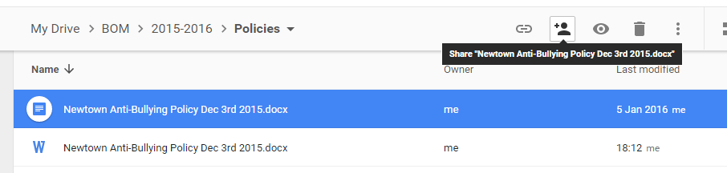
This will open a popup window where you enter the email addresses of those you wish to share with, for example I chose to share this document with keith.lemon@newtownschool.ie click on send and add a note if you wish. An email invitation will be sent to the person or people you choose to ask tell them they an access the document.
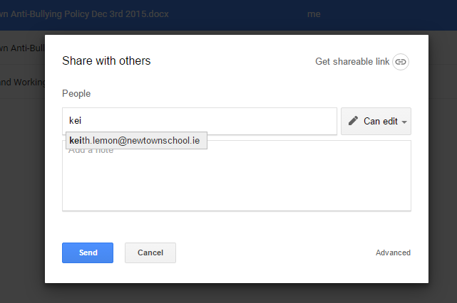
Once that person clicks on the link in the email they will see the document in the Shared with Me section of Google Drive.
If you want as the owner to make changes to who has access and what kind of access they can have then click on the document you own in your My Drive, click the Share icon as before. This time click on Advanced.
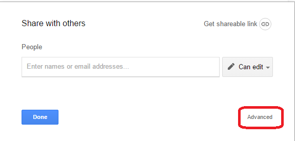
Now it shows the list of those people the document is shared with and their individual access rights. You can change who the owner is if you want someone else to be responsible for accepting and rejecting suggestions to the doucment. You can restrict access to only view or only comment and not edit at all.
At the bottom you can see it is also possible to prevent users to grant access to anyone else, or even prevent users from downloading, printing or copying for viewers or commenters (not editors).
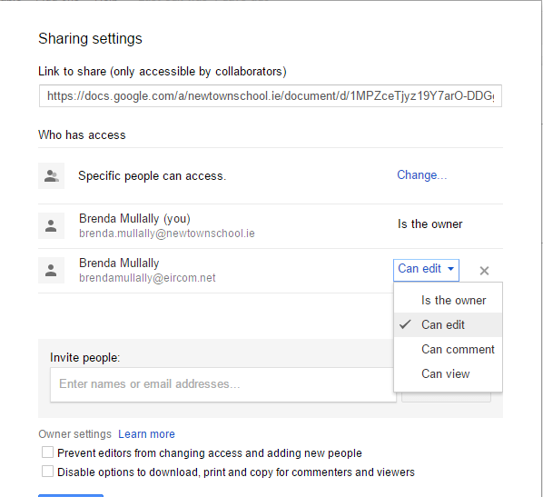